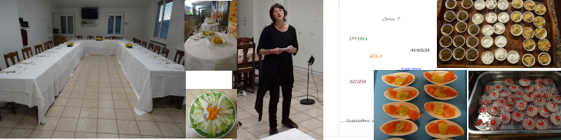

Cene

La cena è un alternarsi di racconti scelti secondo un tema e di pietanze inerenti la storia. Ogni menù è composto da un aperitivo ricco, antipasto, primo, piatto principale con contorno, dolci, caffè/tisana.
Il menu è fisso e a sorpresa, nella fase di iscrizione, si terrà conto di eventuali allergie e regimi particolari. Unicamente per adulti con un minimo di 15 partecipanti ed un massimo di 30, ha una durata di 3.00/3.30, a seconda dei gruppi.
Le cene con storie sono già state realizzate in diversi luoghi: biblioteche, mense, case private, scuole. Ci preoccupiamo di tovaglie, piatti, servizio e riordino, necessitiamo di un locale con tavoli e sedie e un cucinino . Nel prezzo per persona, da stabilire, è tutto compreso, tranne il vino ed eventuali bibite.
Le cene hanno un tema e il menu cambia secondo le storie.
Storie in tutti i sensi : Varia da racconti moderni a fiabe tradizionali,diversi generi, toccando tutti i sensi.
A tavola con le fiabe : Antiche e moderne in relazione con il cibo
Giro del mondo : fiabe di ogni continente
Cena d’autore : Novelle d’autore Esopo, Pirandello, Boccaccio,…
7 vizi capitali : In funzione dei vizi, più divertenti delle virtù, storie da Benni, Mitologiche, fiabe dalla tradizione popolare
Mela racconti ? : Basato su storie e cibi con mele
Alla fine, ogni commensale, riceverà la bibliografia e il menu !